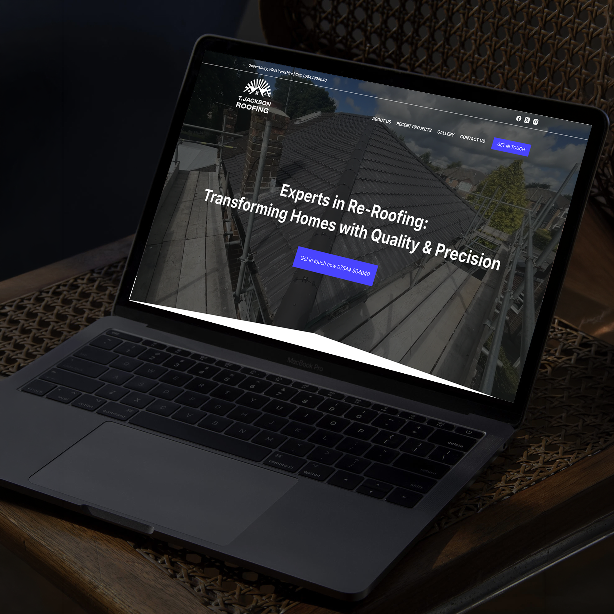
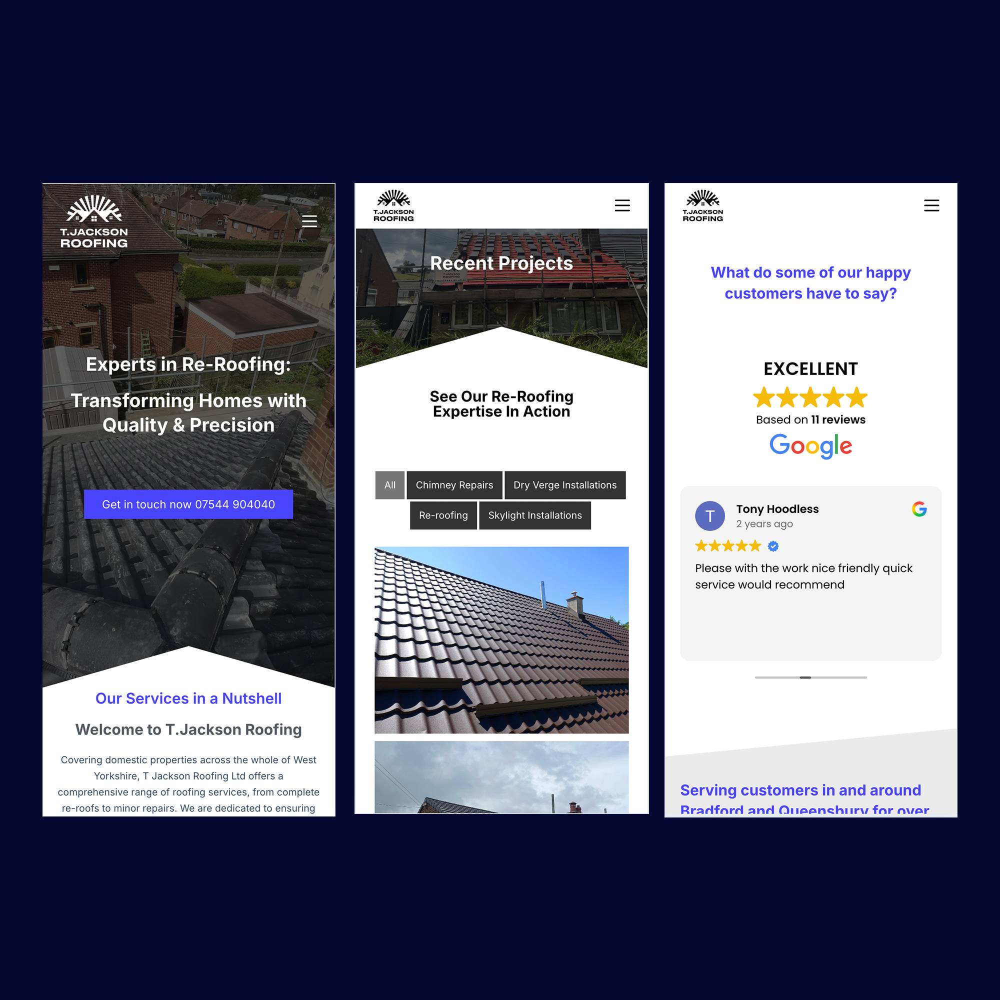

"We had appointments within our first day of going live"
Every section of the site is designed with conversion in mind—guiding users to book an appointment and get in direct contact with the client. I made sure that calls to action and contact information were always easily accessible, no matter where users were on the page. This ensures a smooth user journey toward making a booking or phone call. Additionally, the site’s technical performance supports fast, seamless navigation—even on mobile devices, where the majority of traffic comes from.